Color
M3 system tokens (light scheme, navy-blue seed) and the chart data-mark palette mapped onto the primary tonal range. Bar fills use a subtle top-lit gradient.
System color tokens
colors-system.svg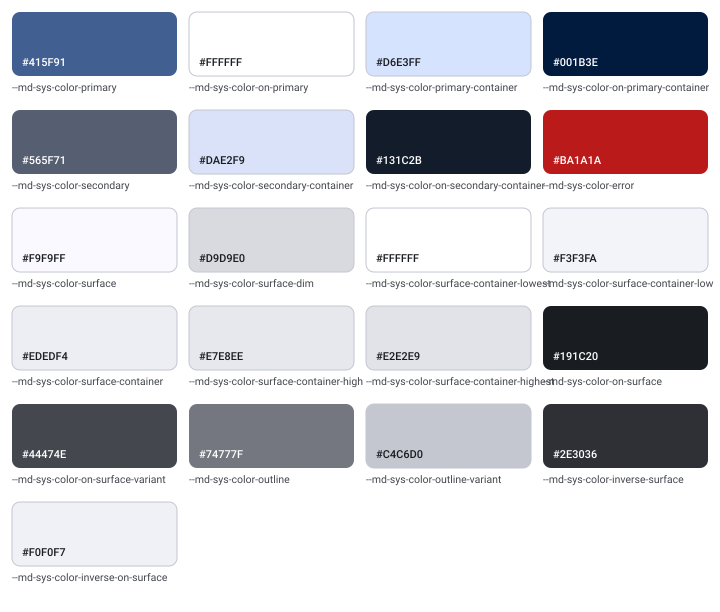
Chart & series palette
colors-chart.svg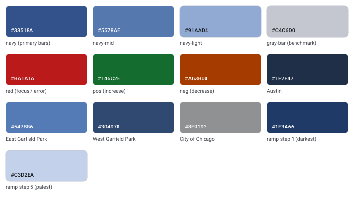
Bar fill gradients
colors-gradients.svg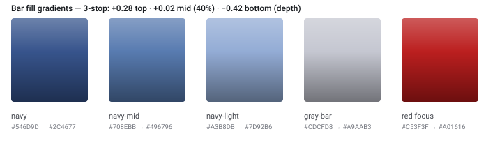
Typography
Roboto type scale — from the display headline down to source captions.
Type scale
typography.svg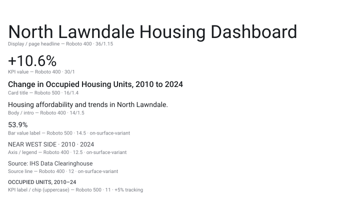
Shape & Elevation
Corner-radius and elevation conventions used across cards, chips, and tooltips.
Shape & elevation scale
shape-elevation.svg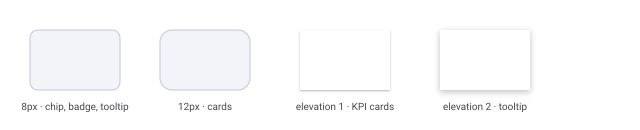
Bar texture & shape
Standalone bars use a 4px corner radius and a dither stipple (SVG feTurbulence clipped to the mark) layered over the gradient fill, for a matte, tactile surface. Stacked and diverging segments keep square ends so they abut cleanly; dots and dumbbells stay crisp.
Bar treatment progression
bar-texture.svg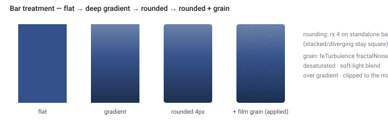
Components
The building blocks of the dashboard, each annotated with its tokens.
KPI card
component-kpi-card.svg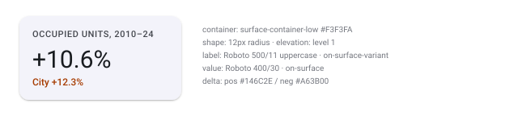
Chart card & chip
component-chart-card.svg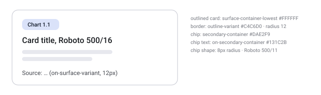
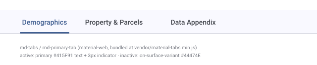
Data table
component-table.svg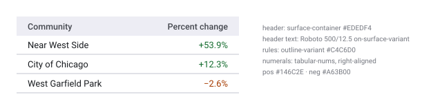
Tooltip
component-tooltip.svg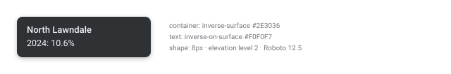
Chart specimens
Each chart type in the dashboard, drawn with the real palette and encoding rules so you can compare treatments side by side.
Ranked bars
chart-ranked.svg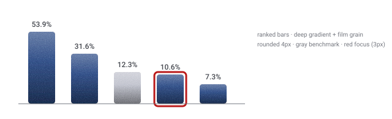
Dumbbell
chart-dumbbell.svg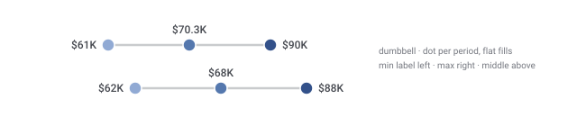
100% stacked
chart-stacked.svg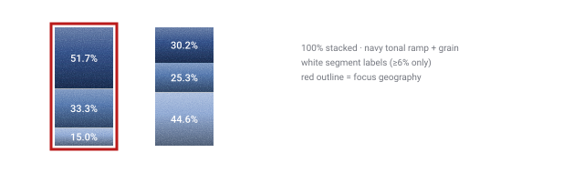